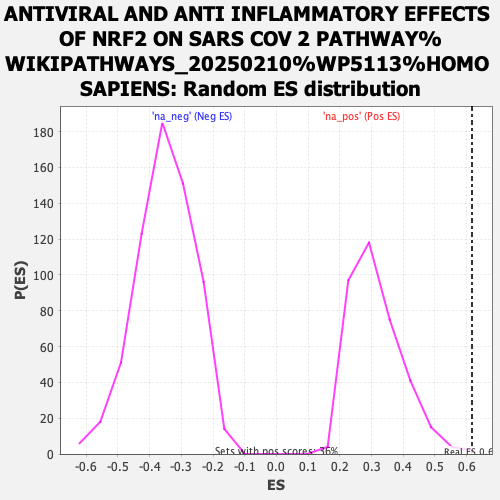

| | | Dataset | ranked_genes_2 |
| Phenotype | NoPhenotypeAvailable |
| Upregulated in class | na_pos |
| GeneSet | ANTIVIRAL AND ANTI INFLAMMATORY EFFECTS OF NRF2 ON SARS COV 2 PATHWAY%WIKIPATHWAYS_20250210%WP5113%HOMO SAPIENS |
| Enrichment Score (ES) | 0.61675334 |
| Normalized Enrichment Score (NES) | 1.9606612 |
| Nominal p-value | 0.0028089888 |
| FDR q-value | 0.110345684 |
| FWER p-Value | 0.741 |
Table: GSEA Results Summary
 Fig 1: Enrichment plot: ANTIVIRAL AND ANTI INFLAMMATORY EFFECTS OF NRF2 ON SARS COV 2 PATHWAY%WIKIPATHWAYS_20250210%WP5113%HOMO SAPIENS
Fig 1: Enrichment plot: ANTIVIRAL AND ANTI INFLAMMATORY EFFECTS OF NRF2 ON SARS COV 2 PATHWAY%WIKIPATHWAYS_20250210%WP5113%HOMO SAPIENS
Profile of the Running ES Score & Positions of GeneSet Members on the Rank Ordered List
| SYMBOL | RANK IN GENE LIST | RANK METRIC SCORE | RUNNING ES | CORE ENRICHMENT | | 1 | HMOX1 | 77 | 5.353 | 0.1371 | Yes |
| 2 | NQO1 | 812 | 3.806 | 0.1819 | Yes |
| 3 | IKBKG | 829 | 3.781 | 0.2817 | Yes |
| 4 | KEAP1 | 1053 | 3.505 | 0.3581 | Yes |
| 5 | RXRA | 1551 | 2.956 | 0.3985 | Yes |
| 6 | GCLM | 1643 | 2.863 | 0.4680 | Yes |
| 7 | NFE2L2 | 1807 | 2.699 | 0.5275 | Yes |
| 8 | GUCY1A2 | 2454 | 2.133 | 0.5344 | Yes |
| 9 | RELA | 2667 | 1.927 | 0.5694 | Yes |
| 10 | NFKBIA | 2893 | 1.722 | 0.5980 | Yes |
| 11 | GCLC | 3169 | 1.500 | 0.6168 | Yes |
| 12 | NFKB1 | 4416 | 0.621 | 0.5367 | No |
| 13 | CCL2 | 5312 | 0.145 | 0.4711 | No |
| 14 | PRKG2 | 5619 | 0.032 | 0.4483 | No |
| 15 | SLC7A11 | 6992 | -0.578 | 0.3573 | No |
| 16 | IRF3 | 7883 | -1.151 | 0.3190 | No |
| 17 | CHUK | 9912 | -2.644 | 0.2324 | No |
Table: GSEA details [plain text format]

Fig 2: ANTIVIRAL AND ANTI INFLAMMATORY EFFECTS OF NRF2 ON SARS COV 2 PATHWAY%WIKIPATHWAYS_20250210%WP5113%HOMO SAPIENS: Random ES distribution
Gene set null distribution of ES for ANTIVIRAL AND ANTI INFLAMMATORY EFFECTS OF NRF2 ON SARS COV 2 PATHWAY%WIKIPATHWAYS_20250210%WP5113%HOMO SAPIENS